The Community Data Explorer for Cincinnati (CoDEC) is a data repository composed of equitable, community-level data for Cincinnati.
Data about the communities in which we live come in different spatiotemporal resolutions and extents and often are not designed with the specific goal of integrating with other data. CoDEC defines specifications for community-level data in an effort to make them more FAIR. Operating with a common data specification means that organizations can more easily use methods and tools for harmonizing, storing, accessing, and sharing community-level data. This data can be described, curated, and checked against CoDEC specifications using the codec R package. Using these tools, a collection of extant community-level data resources is automatically transformed into a harmonized, community-level data package that is openly available and accompanied by (1) a richly-documented data catalog, (2) a web-based interface for exploring and learning from data, and (3) an API for accessing data at scale and on demand.

Data packages are created by transparently and reproducibly using code to assemble data and automatically validate data structures. A single point for data consumption provides ownership of the process of harmonizing data and integrates well with data governance, but most importantly, can provide data to be consumed in multiple ways (e.g., dashboard, tabular data file, API). Creating and maintaining an open community-level data resource equips the entire community for data-powered decision making and boosts organizational trustworthiness. Demonstrating reliability and capability of appropriately managing shared data helps earn the trust of organizations and communities intended to be served.